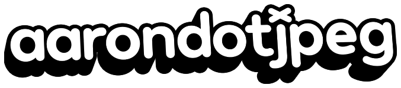
aaron イーライ
©09-2026
I build ideas into worlds_
sometimes polished, sometimes raw,
always intentional with personality.
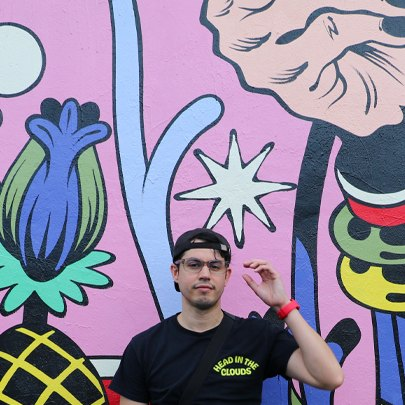
I’m aarondotjpeg, a multidisciplinary creative working across graphic design, branding, art direction, illustration, and digital experiences. I move between disciplines freely, using whatever medium best brings an idea to life.
Born in New York and now based in Florida, my creative path has taken me across the country, shaped by different people, places, and experiences along the way. Drawing, photography, and design have always been interconnected parts of how I create, eventually growing into a broader practice that includes branding, digital experiences, and creative direction.
My approach is influenced by childhood cartoons, anime, space exploration, street culture, music, and the world around me. I’m drawn to bold visuals, playful ideas, and unexpected details—creating work that feels expressive and imaginative while still being intentional. Whether physical or digital, I’m always looking for new ways to turn an idea into something people can see, feel, and remember.
Contact
aarondotjpeg@gmail.comWhat I do
Graphic Design & Brand Development
Visual identities, illustration, print, packaging, and creative systems built to give brands a different point of view.
Web & Digital and Interactive Design
Thoughtful, responsive digital experiences designed from the smallest to largest screen.
Art Direction & Creative Leadership
Concept development, visual direction, storyboarding, and guiding ideas from their earliest stages through execution.
Creative Discovery & Concepting
Finding the idea pursuing, shaping it into something tangible, and figuring out the most interesting way to bring it to life.
Experience
JULY 2025 -
Present
OCT 2022 -
APR 2023
JULY 2025 - Present
Lead Web Designer / Art Director
Hydra Workflows
Lead web design, creative direction, and digital branding for AI-focused workflow and automation projects.
OCT 2022 - APR 2023
Head Graphic Designer
Lucidity Festival
Led creative direction and branding development for the festival’s 10th anniversary campaign.
I like strange ideas, good
coffee, and making things that
are hard to ignore.
Making Identities
I’m aarondotjpeg, a multidisciplinary creative working across graphic design, branding, art direction, illustration, and digital experiences. I move between disciplines freely, using whatever medium best brings an idea to life.
Born in New York and now based in Florida, my creative path has taken me across the country, shaped by different people, places, and experiences along the way. Drawing, photography, and design have always been interconnected parts of how I create, eventually growing into a broader practice that includes branding, digital experiences, and creative direction.
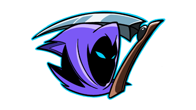
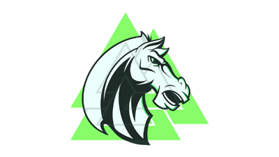
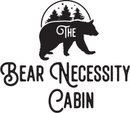
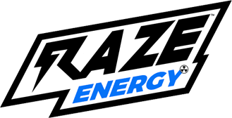
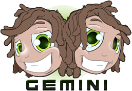
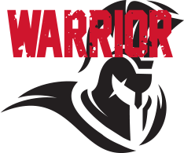
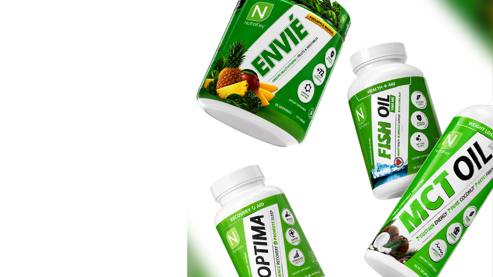
01
NutraKey Health
I’m aarondotjpeg, a multidisciplinary creative working across graphic design, branding, art direction, illustration, and digital experiences. I move between disciplines freely, using whatever medium best brings an idea to life.
Born in New York and now based in Florida, my creative path has taken me across the country, shaped by different people, places, and experiences along the way. Drawing, photography, and design have always been interconnected parts of how I create, eventually growing into a broader practice that includes branding, digital experiences, and creative direction.

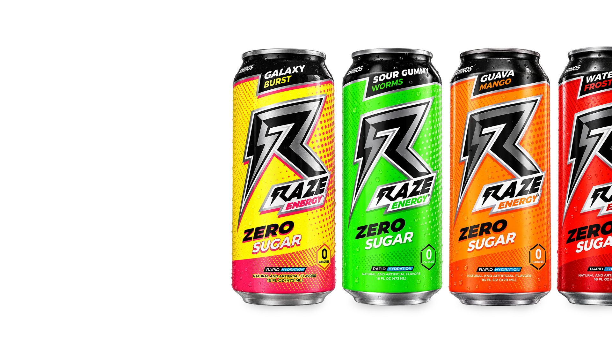
02
Repp Sports
I’m aarondotjpeg, a multidisciplinary creative working across graphic design, branding, art direction, illustration, and digital experiences. I move between disciplines freely, using whatever medium best brings an idea to life.
Born in New York and now based in Florida, my creative path has taken me across the country, shaped by different people, places, and experiences along the way. Drawing, photography, and design have always been interconnected parts of how I create, eventually growing into a broader practice that includes branding, digital experiences, and creative direction.
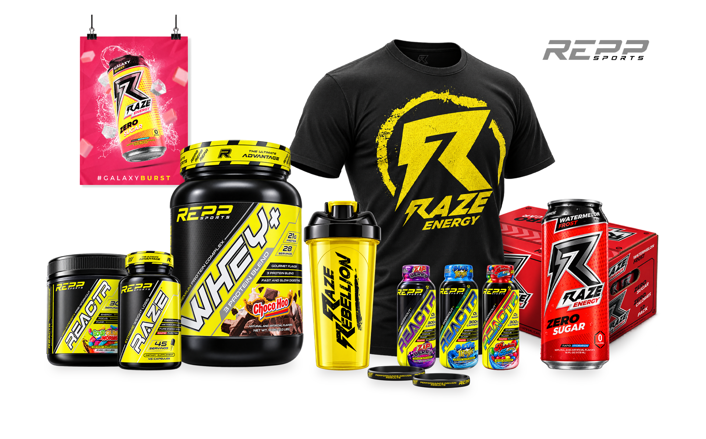
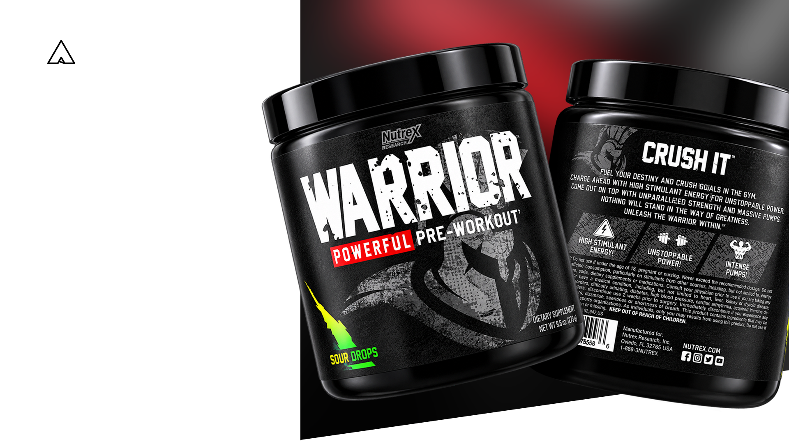
03
Nutrex Research
I’m aarondotjpeg, a multidisciplinary creative working across graphic design, branding, art direction, illustration, and digital experiences. I move between disciplines freely, using whatever medium best brings an idea to life.
Born in New York and now based in Florida, my creative path has taken me across the country, shaped by different people, places, and experiences along the way. Drawing, photography, and design have always been interconnected parts of how I create, eventually growing into a broader practice that includes branding, digital experiences, and creative direction.
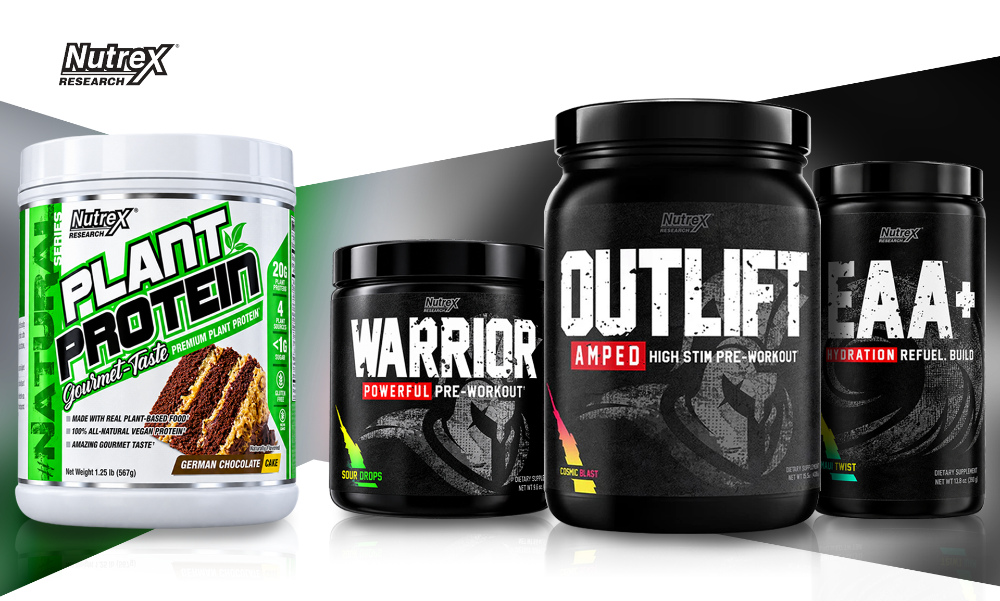
World Wide Web
Rearrange Us
I’m aarondotjpeg, a multidisciplinary creative working across graphic design, branding, art direction, illustration, and digital experiences. I move between disciplines freely, using whatever medium best brings an idea to life.
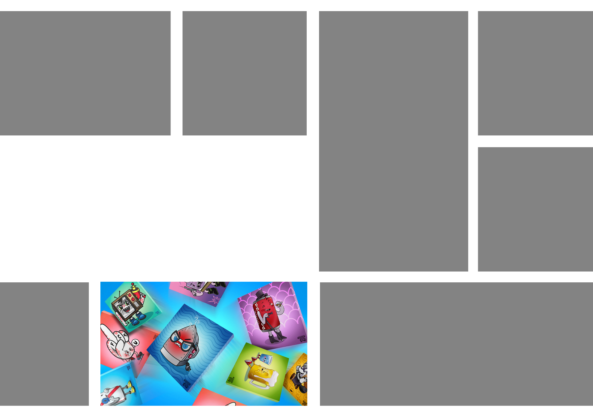
Content Creation
I’m aarondotjpeg, a multidisciplinary creative working across graphic design, branding, art direction, illustration, and digital experiences. I move between disciplines freely, using whatever medium best brings an idea to life.
Born in New York and now based in Florida, my creative path has taken me across the country, shaped by different people, places, and experiences along the way. Drawing, photography, and design have always been interconnected parts of how I create, eventually growing into a broader practice that includes branding, digital experiences, and creative direction.